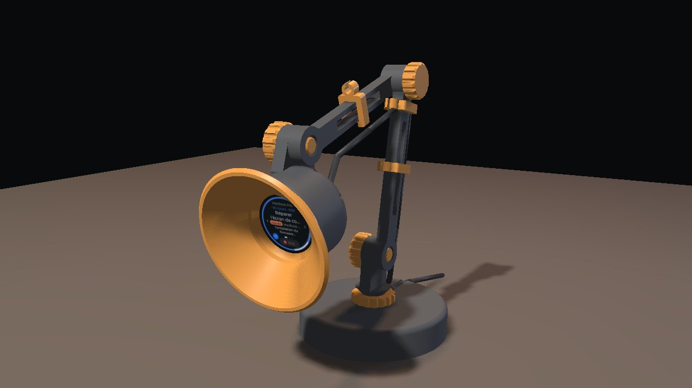

Harness C3
Le cadran tactile rond qui suit vos agents de code, et la lampe de bureau imprimable
dont il est l'ampoule — firmware, impression et montage au même endroit.
The round touch dial that keeps an eye on your coding agents, and the printable desk lamp it
lives in — firmware, printing and assembly in one place.
Web flasher
Flashez le firmware depuis le navigateur (Chrome ou Edge), sans rien installer.
Flash the firmware straight from your browser — nothing to install.

La lampe · the lamp
Montage filmé en français et en anglais, STL, générateur et notice d'impression.
Assembly video in French and English, STLs, generator and printing guide.
- ESP32-C3 · 240×240 rond
- tactile CST816D
- firmware 0.2.0-c3
- 3 cartes d'agents · links · fork
- STL + générateur